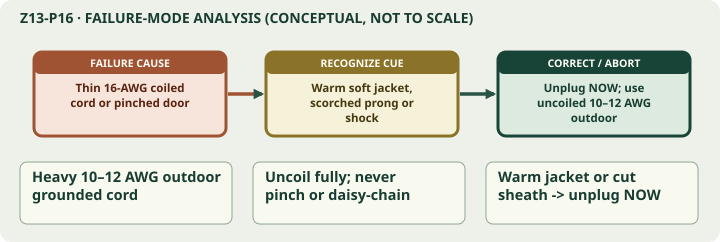

Z13-P16 · Home survival and utilities · New manuscript
Size outdoor extension cords safely and spot overheating failure cues
Prevent electrical fires, voltage drops, and shock hazards when running heavy appliances off portable generators or power stations.
When it applies · Temporary power cord runs from outdoor generators or indoor battery stations to refrigerators, freezers, or lights.
Equipment · Heavy-duty UL-listed 12-gauge or 10-gauge outdoor-rated three-prong grounded cords (marked W or W-A), intact grounding pins, and GFCI protection.

Actions
- Match cord wire gauge and outdoor wet rating strictly to total connected wattage and cord length (using thick 12-AWG or 10-AWG outdoor-rated grounded cords for refrigerators/freezers—never thin 16-AWG indoor lamp cords) and NEVER daisy-chain multiple light cords or strip plugs together.[U02, U15]
- Route cords smoothly without pinching them inside closed windows/doors, coiling tightly under heavy load (which traps heat), running under rugs, or letting plug junctions rest in snowmelt or puddles.[U15, U04]
- Inspect plugs, insulation, and grounding prongs before use—feel cords periodically during operation; ANY warm/soft jacket, scorched prong, or tingling shock sensation demands immediate unplugging and retirement.[U02, U04]
Failure recognition · Running a full-size refrigerator and chest freezer off a coiled 16-gauge indoor extension cord pinched under a snow-wet door.[U02, U15]
Verify · Confirm heavy outdoor-rated grounded cord, uncoiled full run, dry elevated junctions, and cool-to-touch jacket under load.[U02, U15]
Stop or change course · Warm cord, burnt plastic odor, cut insulation, missing ground prong, or tripped GFCI requires shutting down and replacing the cord immediately.[U02, U15]
Evidence and editorial notes
- U02 · CPSC · CPSC Warns of Generator, Carbon Monoxide and Fire Hazards Ahead of Hurricane Season (2026 seasonal agency guidance)
- Section: Use portable generators outdoors; keep exhaust away · Conditions: Portable generator during household outage
Support: Run outdoors at least 20 feet from buildings and direct exhaust away. Use approved connections as the manual dictates; licensed electrical work governs transfer to a building. Never backfeed.
Limitations: Distance alone does not guarantee safety. Local code and exact equipment determine installation. · Conflicting evidence: See A02 claim audit for boundaries.
Editorial note: Core electrical isolation boundary across Z13 generator cards. · Specialist reviewer: Licensed electrician and fire safety
Primary source · checked 2026-11-24 - U04 · FEMA / Ready.gov · Home Fires (current web edition)
- Section: Home Fires > Smoke Alarms, Fire Extinguishers, and Escape Plans · Conditions: Residential fire prevention during outages and supplemental heating
Support: Test smoke alarms monthly on every level and outside sleeping areas, keep two exits clear from every room, store fuels outside living spaces in approved containers, and evacuate immediately if a fire exceeds incipient containment.
Limitations: Candles and improvised indoor flames dramatically elevate outage house-fire deaths. · Conflicting evidence: None; integrates with CPSC CO-alarm rules (C09).
Editorial note: Anchors outage fire prevention, fuel storage, and exit readiness in Z13. · Specialist reviewer: Fire prevention and residential safety
Primary source · checked 2026-11-24
Current assessment · W2C-E014 (2026-11-25) · Open: source scope does not match the claim; escalated: Supported: smoke alarms on every level including the basement; batteries twice a year unless 10-year lithium; replace units every 10 years or per manufacturer; keep flammable liquids away from heat sources; refuel generators outdoors. Limits: Not on the page although U04 asserts them: monthly testing, alarms outside sleeping areas, two exits from every room, storing fuels outside in approved containers, extinguisher thresholds, and grease-fire guidance. - U15 · CPSC · CPSC Warns of Generator, Carbon Monoxide and Fire Hazards Ahead of Hurricane Season (2026 seasonal agency guidance)
- Section: Generator fire and carbon monoxide safety; operation and refueling · Conditions: Portable generator in open air, manual and site permit its use
Support: Keep equipment dry and use manufacturer-permitted protection only if it preserves safe outdoor placement. Refuel with the engine off after cooling.
Limitations: No universal canopy or grounding scheme; ask a licensed electrician and keep evacuation ahead of shutdown after possible indoor exhaust exposure. · Conflicting evidence: See A02 claim audit for boundaries.
Editorial note: Covers wet-weather generator enclosures, refueling cooldown, and shock prevention. · Specialist reviewer: Electrical safety and fire prevention
Primary source · checked 2026-11-24
Current assessment · A04-U15 (2026-11-25) · Open: support partial or missing (A04): CO placement supported; wet protection/model enclosure and cooldown depend on manufacturer and exact safe conditions. Keep operations under hold. Limits: Specialist review PENDING (Electrical safety and fire prevention); publication HOLD. All release decisions pending.
Source lineage · CPSC Generator Safety and Ready.gov Power Outages; new manuscript · Classification · New manuscript.